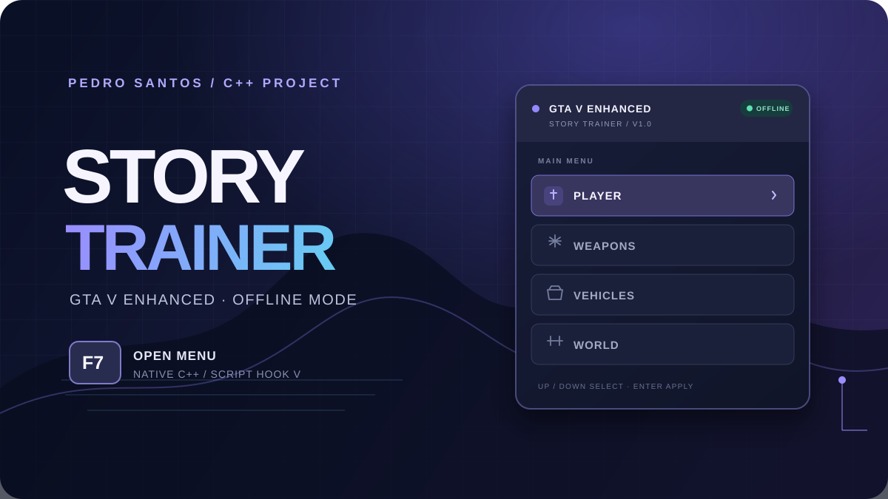
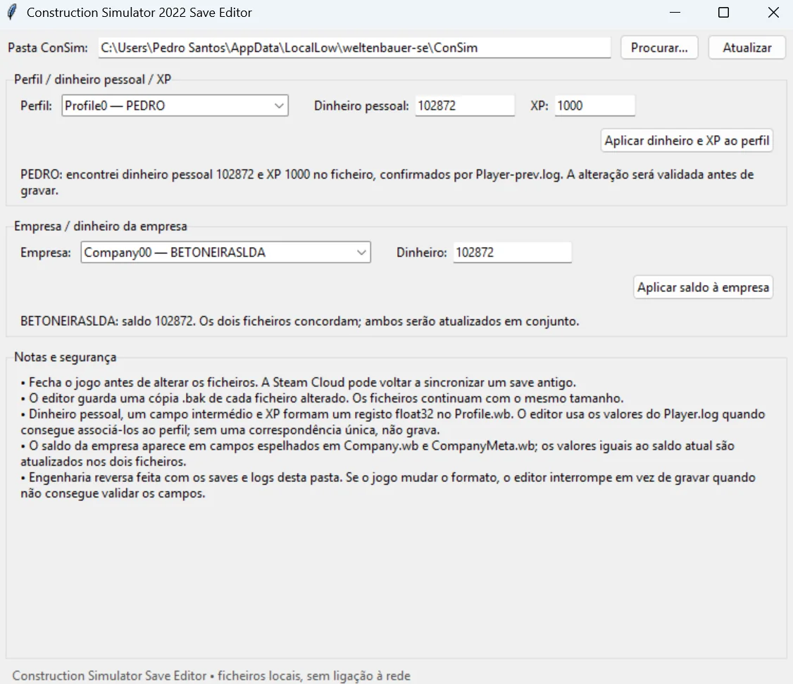
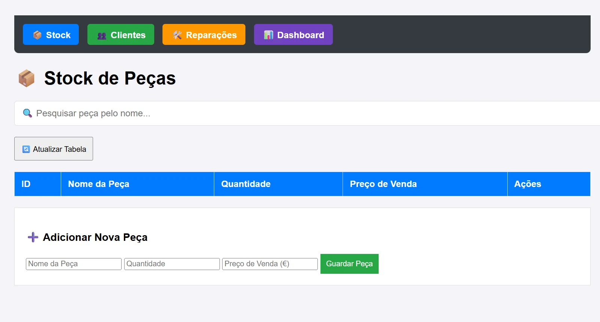
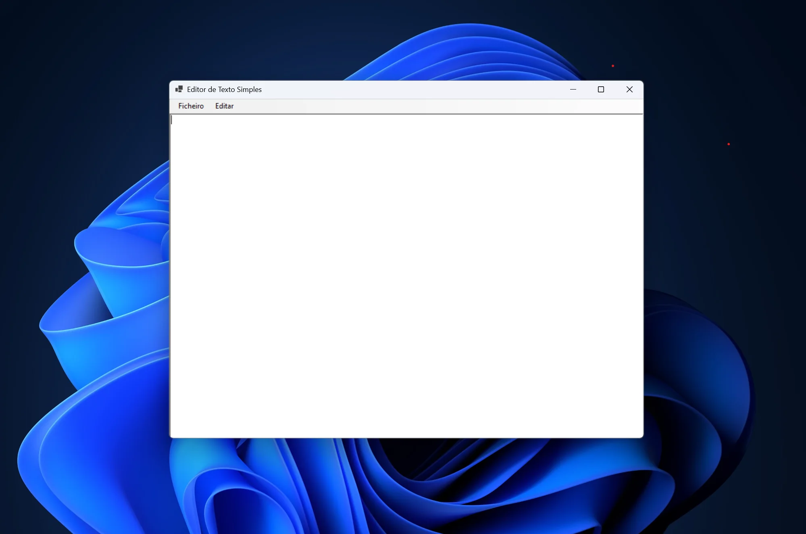
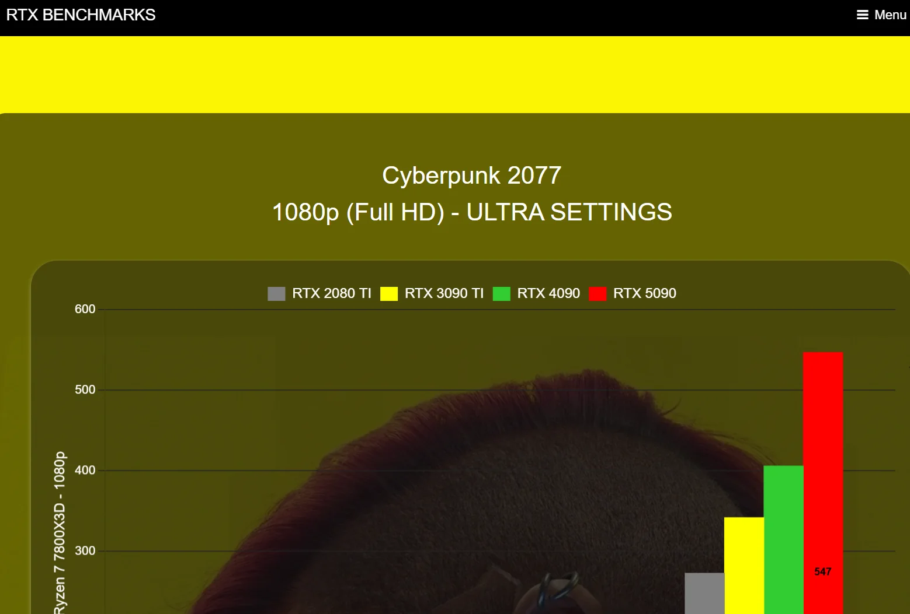
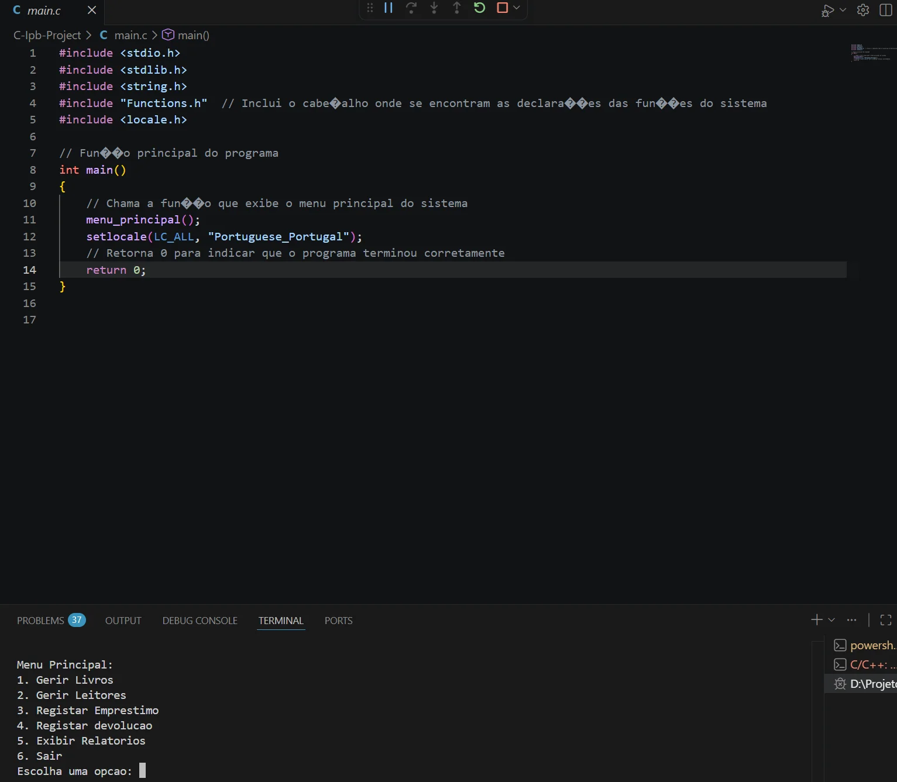
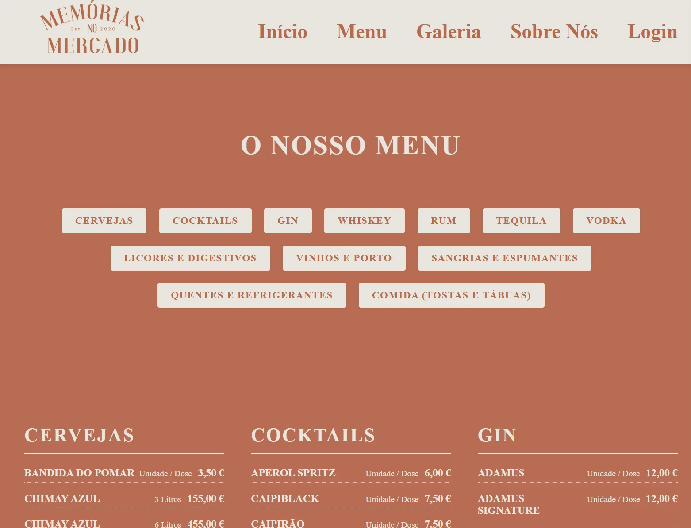

Plugin .asi · C++ · ScriptHookV
GTA V Enhanced Story Trainer
Trainer nativo para o modo História offline, com menu F7 para opções de jogador, armas, veículos e mundo. O menu bloqueia ações quando deteta uma sessão online.
Feito por mim
Trabalhos académicos e pessoais em desenvolvimento web, aplicações e programação.

Plugin .asi · C++ · ScriptHookV
Trainer nativo para o modo História offline, com menu F7 para opções de jogador, armas, veículos e mundo. O menu bloqueia ações quando deteta uma sessão online.

Aplicação desktop · Ferramenta para jogos
Editor local de saves para gerir perfil, dinheiro pessoal, XP e saldo da empresa. Valida os valores antes de gravar, mantém os ficheiros da empresa sincronizados e cria cópias de segurança .bak.

API · Node.js · PostgreSQL
API REST para gerir stock, clientes e reparações num negócio de assistência técnica. Desenvolvida com Node.js, Express e PostgreSQL.

Aplicação desktop · C#
Editor simples com interface gráfica em Windows Forms e expressões regulares, com suporte para guardar ficheiros TXT e RTF.

Desenvolvimento web
Website académico para apresentar placas gráficas e comparar o respetivo desempenho através de benchmarks.

Programação · C
Projeto académico desenvolvido em C para aplicar lógica de programação, algoritmos e fundamentos da linguagem.

Web design · Projeto académico
Projeto de desenvolvimento web com foco no design de uma página de apresentação para um bar.